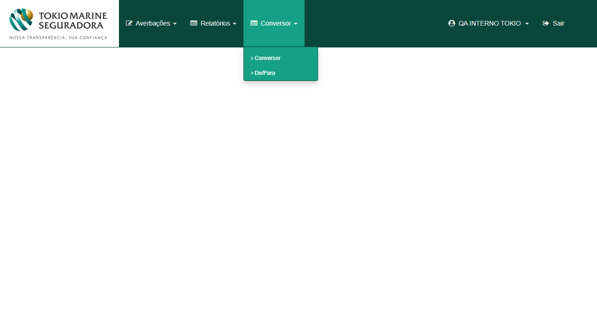
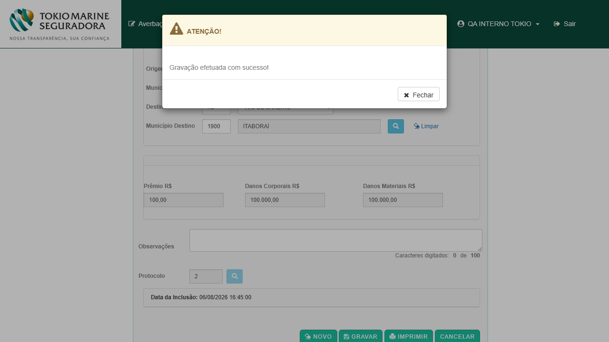
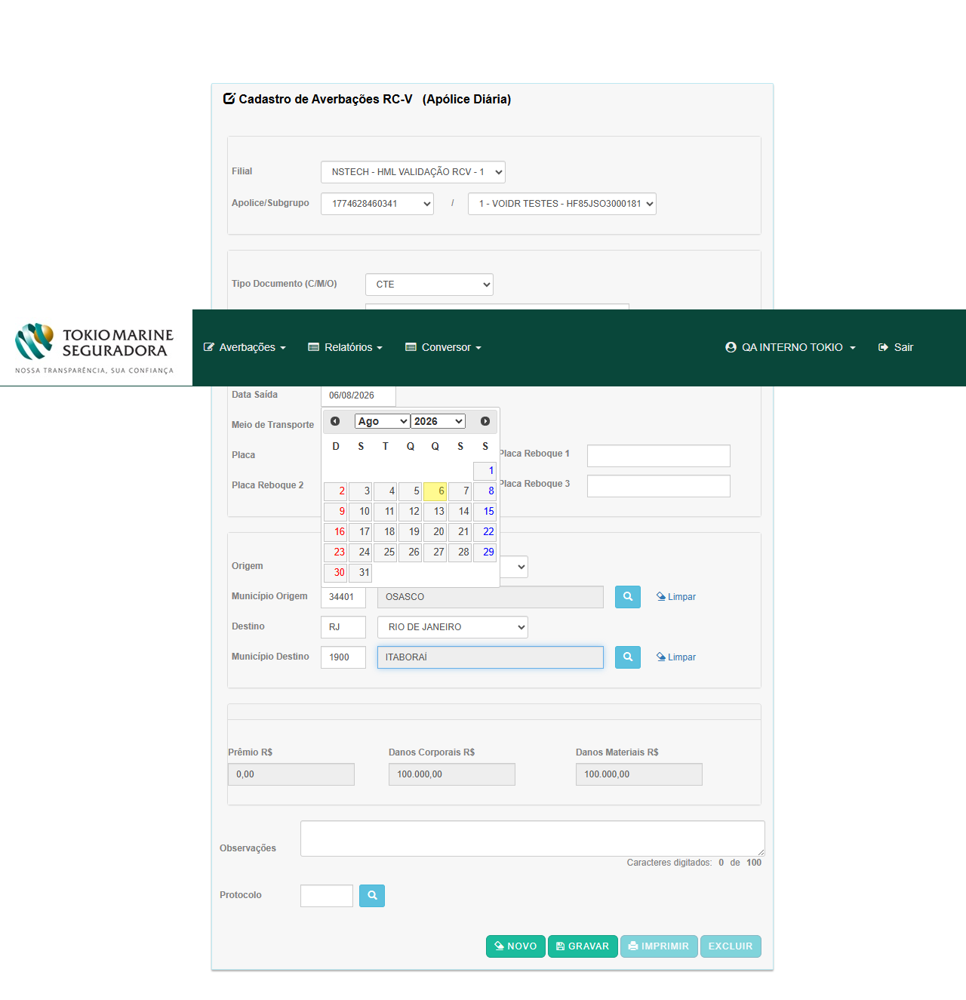
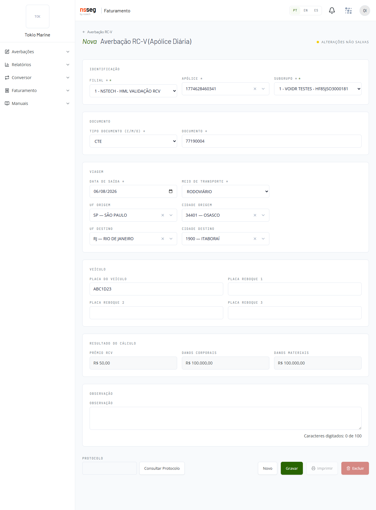
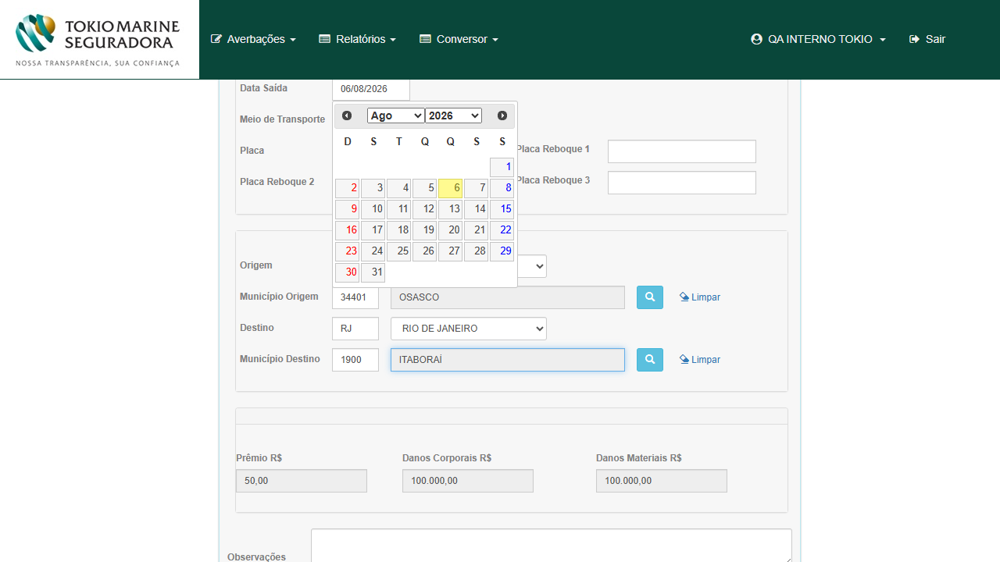
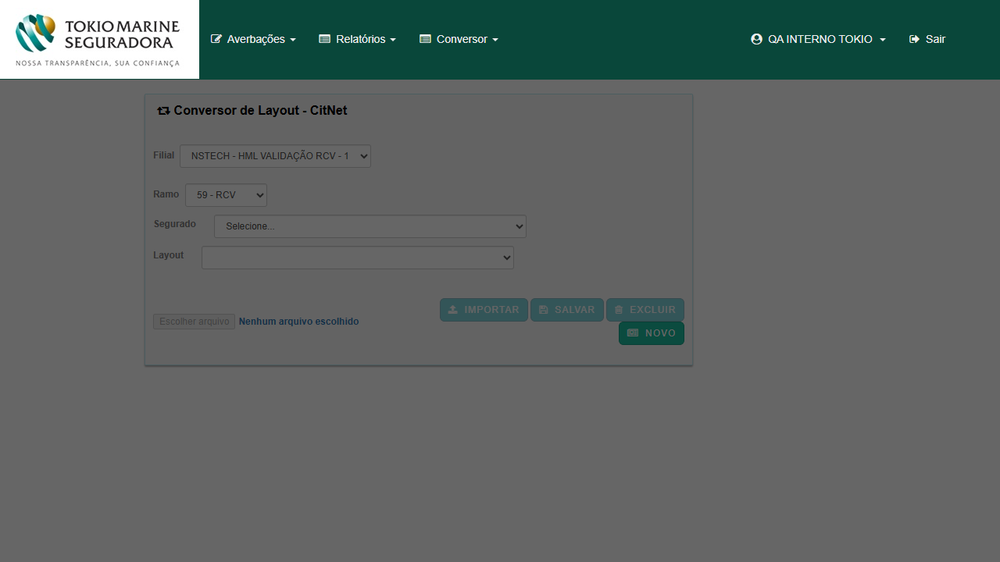
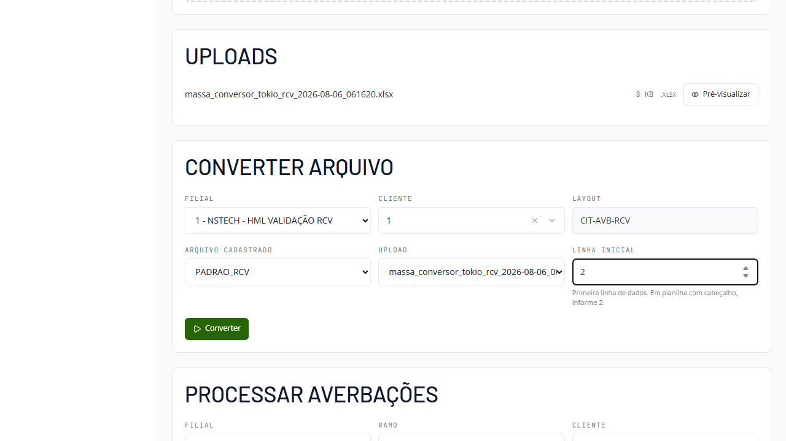

| Item | CITNET atual | CITNET novo |
|---|---|---|
| Acesso | /citnet/ · usuário INTERNO, sem selecionar filial | combo Ambiente = Tokio Marine · mesmo usuário |
| Base de dados | smt-hom-citweb-tokio — a mesma. O painel do novo exibe 10.776 apólices nacionais, idêntico ao COUNT do banco no ramo 59. | |
| Prova de base compartilhada | Na apólice 1234567890123/sgp 1 o novo gerou protocolo 1 e o atual, em seguida, protocolo 2 — numeração sequencial entre os dois sistemas. | |
| Ramo 59 na filial 1 | 10.627 apólices vigentes e não canceladas · e_avb='D' (diária) em 10.763 de 10.776 → a janela D+5 vale para praticamente toda a base | |
Credenciais não são publicadas aqui — ficam no .env do repositório privado.
| Menu | CITNET atual (Tokio) | CITNET novo (Tokio) | Situação |
|---|---|---|---|
| Averbações | Aut.Faturamento · RCA-C · RCTR-C · RCTA-C · RCTF-C · RCV · Transporte Nacional · Importação-Provisória · Importação-Definitiva · Exportação · RCTR-VI | RCV | migração parcial (esperado) |
| Relatórios | Consulta e Fatura Mensal, Nacional e Internacional | Consulta · Fatura Mensal (nacional) | esperado |
| Conversor | Conversor · De/Para | Conversor | o novo não expõe o De/Para |
| Faturamento → Aprovação de Prévias | não está no menu (só por URL) | está no menu | corrigido desde 05/08 |
| Manuais | ausente | Manual RCV · Manual RCV — Certificado | a mais no novo |
| Admin (Tracker, Flags…) | — | ausente neste tenant | presente na AXA-alfa |
O item que estava aberto no kickoff (Aprovação de Prévias fora do menu do novo) foi resolvido. A ausência do Admin continua, e permanece a pergunta para Produtos: a diferença de menu entre tenants é intencional?


Quatro pares de averbações criadas na mesma sessão, uma em cada sistema, com a mesma massa e o mesmo percurso. O oráculo é o cadastro da condição comercial (tb_sgp_rcv_cml_cit), não o comportamento de nenhum dos dois sistemas.
| # | Apólice / sgp | Tipo de CC (cadastro) | Percurso | Esperado pelo cadastro | CITNET atual | CITNET novo | Veredito |
|---|---|---|---|---|---|---|---|
| T1 | 1234567890123 / 1 | PRFX · v_prm 100 | SP OSASCO → RJ ITABORAÍ | R$ 100,00 | R$ 100,00 | R$ 100,00 | PARIDADE |
| T2 | 150459 / 2 | PRVCML · urb 10 / int 20 / viz 30 / nvz 40 | SP → RJ (estados vizinhos) | R$ 30,00 | R$ 30,00 | R$ 30,00 | PARIDADE |
| T3 | 1774628416186 / 1 | PRVCML · urb 0 / int 50 | SP OSASCO → SP CAMPINAS (mesmo estado) | R$ 50,00 | R$ 50,00 | R$ 50,00 | PARIDADE |
| T4 | 1774628460341 / 1 | PRVCML · urb NULL / viz 50 | SP → RJ (estados vizinhos) | R$ 50,00 | R$ 0,00 | R$ 50,00 | DIVERGE (ver C4) |
Também idênticos nos dois: Danos Corporais e Danos Materiais gravados por averbação (100.000/100.000 em T1/T3/T4; 200.000/250.000 em T2, provando que os limites vêm do subgrupo correto), resolução de município (OSASCO 34401, ITABORAÍ 1900, CAMPINAS 9502), competência de referência (202608) e a numeração de protocolo por apólice/subgrupo.
O subgrupo é respeitado nos dois: a mesma apólice 150459 tem sgp 1 = PRFX R$ 10,00 e sgp 2 = PRVCML — e o par T2 usou o sgp 2, devolvendo o valor da tabela de viagem, não o prêmio fixo do sgp 1.


O que estava pendente
O relatório do Conversor da AXA (29/07) registrou como risco a confirmar que, em CLSNACCALC.CalcularPremioRCV, os quatro case de tipo de viagem testam sempre v_vgm_urb != null mas retornam o campo do respectivo tipo — de modo que um subgrupo com valor para "mesmo estado / vizinhos / não vizinhos" e sem valor urbano devolveria zero. Faltava massa dirigida para provar.
O que foi medido na Tokio
Primeiro, a distinção que decide o caso: v_vgm_urb igual a zero não dispara o defeito (o teste é != null, e zero passa). Na base da Tokio a coluna nunca é NULL:
v_vgm_urb nas 4.553 linhas PRVCML | Quantidade |
|---|---|
| NULL | 0 |
| zero | 298 |
| maior que zero | 4.255 |
Com urb = 0 os dois sistemas devolveram R$ 50,00 (caso T3). Então foi criada a linha que faltava — UPDATE v_vgm_urb = NULL na apólice 1774628460341/sgp 1, que tem viz = 50 — e o mesmo percurso foi lançado nos dois sistemas:
v_vgm_urb | CITNET atual | CITNET novo | Cadastro |
|---|---|---|---|
| 0,00 | R$ 50,00 | R$ 50,00 | R$ 50,00 |
| NULL | R$ 0,00 | R$ 50,00 | R$ 50,00 |
| 0,00 (contraprova, após restaurar) | R$ 50,00 | — | R$ 50,00 |
A única variável alterada entre as duas medições foi urb de 0 para NULL; a contraprova restaurou o valor e o atual voltou a R$ 50,00. Ambas as averbações ficaram persistidas no banco para conferência:
doc 77190004 (novo) → v_cml_pmo = 50,00 · doc 78190004 (atual) → v_cml_pmo = 0,00mesma apólice
1774628460341, sgp 1, SP→RJ, competência 202608.
Leitura
É defeito do CITNET atual, não do novo — e a boa notícia é que o novo não replicou o comportamento. O impacto prático hoje na Tokio é nulo (nenhum cadastro com NULL), mas basta um cadastro PRVCML sem valor urbano para o atual passar a faturar zero. Recomendo abrir o defeito contra o atual e manter o comportamento do novo como o correto.
Ressalva importante para a AXA: o relatório da AXA contou "69 apólice/subgrupo com v_vgm_urb nulo/zero". Como zero não dispara o defeito, esse número precisa ser reconferido separando NULL de zero antes de estimar impacto naquele tenant.



Fato observado
Em Conversor → Conversor, com Filial 1, Ramo 59 — RCV e Segurado VOIDR TESTES, ao clicar em IMPORTAR a tela exibe "Erro ao tentar enviar o arquivo conversor!". A chamada correspondente falha no servidor:
POST /citnet/Conversor/UpLoadFileFromAjax → HTTP 500Controller: Conversor · Action: UpLoadFileFromAjax · Exception: System.NullReferenceException · Message: Object reference not set to an instance of an object.
Reproduzido 2 vezes com o mesmo arquivo .xlsx de 24 linhas (8 KB) — o mesmo formato que funciona na AXA.
Por que isso é bloqueante além do próprio upload
No CITNET, o cadastro do layout de entrada depende do upload: ao escolher "Novo Layout de Entrada" a tela exige primeiro o arquivo ("Selecione inicialmente o arquivo a ser importado!") para então mapear coluna → atributo. Com o upload em 500, não há caminho de UI para cadastrar layout de Conversor na Tokio.
Contexto de dados (medido)
A tabela de layouts do CITNET (TB_CIT_NET_LAY_OUT_CAD) estava vazia na Tokio — contra 463 layouts na base da AXA. Isso também explica o sintoma do kickoff: Cliente/ListarPorFilial com c_rmo=59 alimenta o combo Segurado, e a tela do atual o esvazia ao trocar o Ramo.


Fato observado
No novo o upload funciona (POST /api/conversor/uploads → 201, arquivo listado em "Uploads"). O que falha é a conversão:
POST /api/conversor/converter → HTTP 500, content-length: 0corpo enviado:
{"filial":1,"cliente":1,"uploadId":"…","nomeArquivo":"QA_PARIDADE_RCV","nomeLayout":"CIT-AVB-RCV","linhaInicial":2,…}
Testado em duas configurações: com o layout PADRAO_RCV (que o novo oferece sozinho) e com o layout QA_PARIDADE_RCV de 19 atributos criado para esta bateria — 500 nas duas. Ao clicar em Converter a tela não muda: sem resultado, sem erro, sem toast. Um operador não teria como saber que a operação falhou.
Dois problemas distintos, então
- A conversão falha (500 no servidor).
- A falha é silenciosa — o front não trata o 500. Vale corrigir mesmo depois de resolver a causa raiz.
Antes de o layout existir, GET /api/conversor-layout?filial=1&cliente=1&nomeLayout=CIT-AVB-RCV respondia [] e a conversão já devolvia 500 — ou seja, o novo também não distingue "layout inexistente" de erro interno.
O que está corrigido aqui
O C2 da AXA (o novo não perguntava a linha inicial e lia o cabeçalho como registro) está resolvido: existe o campo Linha inicial com a dica "Primeira linha de dados. Em planilha com cabeçalho, informe 2".


A tela de Averbação RC-V não tem campo de quilometragem nem no atual nem no novo. Como a CC do tipo VKMCML cobra por faixa de KM, o único caminho para averbar esses subgrupos é o arquivo do Conversor — que está em 500 nos dois sistemas (T-C1 e T-C2).
Dimensão na Tokio: 287 apólice/subgrupo vigentes na filial 1 têm CC VKMCML (o 3º tipo mais usado, atrás de PRVCML com 1.562 e PRFX com 626). Ou seja, o cálculo VKMCML não é homologável na Tokio hoje — nem para verificar se o novo repete o C3 da AXA (onde o atual grava prêmio zero por não ter branch para VKMCML).
Encaminhamento: este item fica dependente da correção do Conversor. Vale confirmar com Produtos se a ausência de KM na tela é intencional.
Na AXA foi reportado que o novo gravava d_usu_inc em UTC, 3 horas à frente do legado. Na Tokio, medido no banco com as 8 averbações desta bateria:
| Sistema | Documento | d_usu_inc gravado |
|---|---|---|
| novo | 77190001 / 77190002 / 77190003 / 77190004 | 16:37 · 16:39 · 16:42 · 16:54 |
| atual | 78190001 / 78190002 / 78190003 / 78190004 | 16:45 · 16:48 · 16:49 · 16:55 |
Todas em horário local (BRT) e coerentes com o relógio de parede, enquanto o GETDATE() do servidor de banco marcava 19:xx (UTC). Os dois sistemas escrevem a mesma referência de hora — sem divergência e sem risco de virada de dia.
| Achado da AXA | Situação na Tokio |
|---|---|
| D4 — o novo não calculava/exibia o prêmio antes de gravar | Corrigido: o campo Prêmio RCV é preenchido ao completar o percurso, antes do Gravar (evidência no bloco de cálculo) |
| D7 — o novo trazia "UB — URBANO" também na UF de Origem | Não reproduz: no novo a UF Origem tem 45 opções sem UB e a UF Destino tem 46 com UB — igual ao atual |
| R1 — Consulta: Ramo com 6 opções no atual × fixo em 59 no novo | Não reproduz: na Tokio o atual também só oferece 59 - RCV na Consulta |
| R2 — Aprovação de Prévia do novo sem filtro de Subgrupo | Corrigido: o novo tem Filial · Ramo · Apólice · Subgrupo · Competência |
Vale registrar o método: nenhum desses itens foi "herdado" do relatório da AXA — todos foram reverificados em tela neste tenant.
O que foi consultado
Filial 1 · Ramo 59 · Apólice 59001 · Subgrupo 1, nas competências 08/2026 e 07/2026, nos dois sistemas:
| Competência | CITNET atual | CITNET novo |
|---|---|---|
| 08/2026 | "Não há movimento para a competência informada!" | "Nenhum fechamento encontrado para os filtros selecionados." |
| 07/2026 | idem | API /api/autorizacao-previa/consultar → [] |
Por que está vazio (medido no banco)
A apólice 59001/sgp 1 tem PMM de R$ 800,00 e, em 07/2026, uma prévia em tb_cme_cit — fechamento 30, 20 averbações, prêmio R$ 3.739,91 — mas ela já está fechada/aprovada, e as telas listam apenas prévias pendentes. O único movimento aberto está em 08/2026, competência que ainda não teve fechamento gerado pelo serviço.
Ou seja: não é divergência — é ausência de prévia pendente. Os dois sistemas devolvem o mesmo resultado para o mesmo filtro (mudando só o texto da mensagem).
O que falta para fechar o P1 aqui
Uma prévia pendente numa apólice com PMM. A massa já está mapeada e é boa para os 4 cenários de prêmio mínimo: 59001/sgp 1 tem PMM 800,00 e o movimento aberto de 08/2026 soma R$ 226,25 — isto é, prêmio calculado menor que o mínimo, exatamente o cenário em que a AXA divergiu. Basta o fechamento da competência ser gerado para medir os dois lados.

Tudo em HML, na base smt-hom-citweb-tokio, filial 1, cliente 1 (VOIDR TESTES) — registrado aqui para rastreabilidade e reuso:
| Item | O que foi feito | Por quê |
|---|---|---|
| Layout do Conversor | QA_PARIDADE_RCV criado em TB_CIT_NET_LAY_OUT_CAD com os 19 atributos do padrão CIT-AVB-RCV, cada um apontando para a coluna correspondente da planilha — o mesmo mapeamento do layout homônimo da AXA | a tabela estava vazia na Tokio e a tela que cadastra layout depende do upload, que está em 500 (T-C1) |
| Suspensão de apólice | suspensão de 01/08 a 31/08/2026 na apólice 1785176760517 | a única suspensão aberta da base era de outro cliente; o caso "apólice suspensa" precisa da apólice do mesmo cliente do arquivo |
| Massa dirigida do C4 | v_vgm_urb = NULL na apólice 1774628460341/sgp 1 e, ao fim da medição, restaurado para 0,00 | era a condição que faltava para decidir o C4 (ver bloco C4) |
| Arquivo da matriz do Conversor | planilha de 24 casos (datas D+0/D+5/D+6/retroativas, duplicidade, cancelada, sem CC, suspensa, obrigatórios, subgrupo inválido, município inválido, 4 tipos de viagem PRVCML, 3 casos do C4 e 1 de VKMCML) | gerada e versionada; não pôde ser exercitada por causa de T-C1/T-C2 |
| Averbações | 4 no novo (77190001–77190004) e 4 no atual (78190001–78190004) | os 4 pares da tabela de cálculo |
Scripts versionados no repositório privado, em testes-automatizados/sprint-11-citweb/citnet-novo-tokio/: descoberta de massa, verificação por apólice, escolha da massa de cálculo, criação do layout, criação da suspensão, massa dirigida do C4 (com aplicar/restaurar) e gerador da planilha.
Bloqueado por defeito de produto
- Matriz de 24 casos do Conversor (regras de data, duplicidade, cancelamento, suspensão, sem CC, obrigatórios, subgrupo, município) — depende de T-C1 no atual e T-C2 no novo. O arquivo e o layout já estão prontos: assim que qualquer um dos dois converter, a matriz roda.
- Cálculo VKMCML — sem campo de KM nas telas, só pelo Conversor (T-C3).
Pendente de massa/processo, não de defeito
- P1 — prêmio comercial da prévia: aguardando o fechamento de 08/2026 ser gerado para a apólice
59001/sgp 1 (PMM 800 × prêmio 226,25 = cenário "prêmio menor que o mínimo"). - Suspensão, cancelamento e sem-CC pela tela de averbação: a massa está criada e verificada; os casos não foram executados nesta sessão por tempo.
- Consulta de Averbações (Relatórios) — conjunto e colunas: o inventário de filtros do atual foi levantado (Filial · Status · vigência · Ramo só 59 · Apólice · Subgrupo · Data Inicial/Final · Cancelado · Imprimir/PDF · Exportar), mas a comparação de linhas retornadas não foi concluída: nesta sessão não foi possível interagir com essa tela do atual por uma limitação de automação (um
<i class="fa fa-spinner fa-pulse">permanece com animação infinita no DOM e a automação nunca considera a página estável). Não é defeito de produto — é limitação da ferramenta, e a comparação fica para a próxima rodada.
- Dev (C4) — atual: corrigir a guarda
v_vgm_urb != nullemCalcularPremioRCVpara testar o campo do próprio tipo de viagem. O novo já está correto; a referência de comportamento é o novo. Reconferir também o levantamento de impacto da AXA separando NULL de zero. - Dev (T-C1) — atual, prioridade máxima:
NullReferenceExceptionemConversor/UpLoadFileFromAjaxno tenant Tokio. Bloqueia upload e cadastro de layout. - Dev (T-C2) — novo: 500 em
POST /api/conversor/convertere, independentemente da causa, tratar o erro na tela — hoje a falha é silenciosa. Distinguir "layout inexistente" de erro interno. - Produtos: (a) confirmar se as diferenças de menu por tenant são intencionais (Admin ausente na Tokio; De/Para só no atual); (b) confirmar se a ausência de campo KM na tela de averbação RCV é intencional, dado que 287 apólice/subgrupo usam VKMCML.
- QA: reexecutar a matriz do Conversor assim que T-C1/T-C2 caírem; medir o P1 quando houver prévia pendente; concluir a comparação da Consulta.
Relatórios da AXA (referência): Conversor RCV · Averbação RCV · Bateria 3 telas · Kickoff da Tokio.